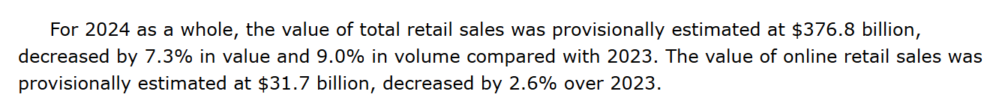

PPT 38–39
有連結，就可信嗎？
有網址是查證起點。自己打開來源，再看原文是否支持具體說法。
固定版本：2025-02-03發布，2024全年初步估計。不是最新修訂值。
來源不能讀取，只能先記讀取限制，不能直接判整個說法虛假。
PPT 40–41
Demo：全年網上零售
Context限定發布版本，Task指定網上零售，Constraints讓你核對欄位與讀取限制。這次不必指定Role。
政府原文段落截圖（離線後備）

2026-10-13擷取，原文未改寫。資料發布者為統計處，政府新聞稿日期2025-02-03。使用此截圖時記「教師提供截圖」，不冒稱自己成功讀取原頁。
PPT 42–45
單位與範圍都要吻合
1 billion = 1,000,000,000。1億 = 100,000,000。
有真連結，答案也可能寫錯
教學用錯誤樣例，不是實際AI回答。
「2024全年全部零售是31.7億港元。」它附了上面的真實政府連結。
PPT 46–47
調查 A：全年全部零售
從網上零售轉到全部零售。輸入prompt後，自己開原文，留下AI原回答與核對依據。
欄位核對不能自動證明你貼的原文存在或支持結論，仍要回到來源。
PPT 48
兩次一樣，就一定正確嗎？
以下是教學樣例，不是實際AI輸出。
回答一：31.7 billion就是31.7億。
回答二：31.7 billion就是31.7億。
D4保留一致性觀察，但不以一致性代替原文證據。A題不用為填表而無限重問。
PPT 49–51
調查 B：甚麼支持「最早」？
先看一個真實來源
2023-07-19發布，門市在新竹工研院，內容提到智能貨架。它能證明香港最早嗎？
查證香港的「最早」主張
至少核對一項找到的候選來源；沒有可讀來源就保留搜尋詞及讀取限制。沒有預設品牌答案，也不要求勉強猜一間店。
PPT 52–53
結論不能比證據更強
已核實：原文支持具體說法。有錯誤：指出不吻合的位置。未能確認：說明已有證據與缺口。
需要追問來源時
AI給你的引文也要自己核對。追問取得線索，不是讓AI自己證明可信。
16 / 29